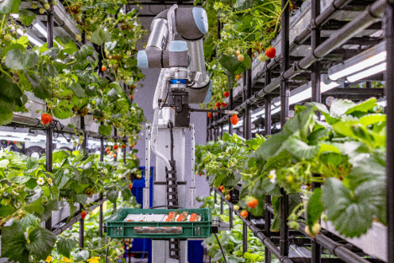
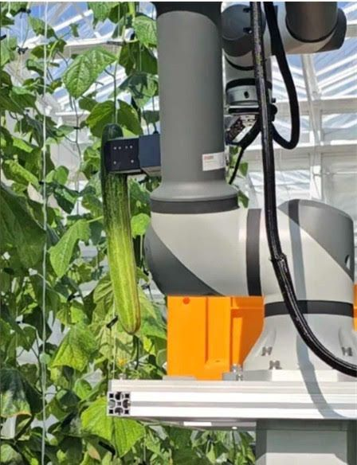

Case study · Metafarmers · 2025–2026
Omni Farmer: robots that harvest and pollinate strawberries
Metafarmers' multi-purpose farm robot. I led the robotics software team and defined the ROS 2 stack from the motor control boards up to navigation, with long-term SLAM that kept localization stable across a 100 × 200 m site. Two robots went into production.
- Role
- Robotics Software Team Lead
- Period
- 2025–2026
- Team
- 7 people
- Stack
- ROS 2, Nav2, FAST-LIO, Cartographer

The robots


Metafarmers reports Omni Farmer running at farms in Dongtan (Hwaseong), Sangju and Seosan. In November 2025 the cucumber-harvesting version finished KTL certification tests of harvest rate and speed.
The problem
The robots had to localize and navigate across a 100 × 200 m farm that has few stable features to anchor a map to.
We first tried to localize with a single 3D LiDAR to keep the sensor set minimal. That was not reliable enough on this site, so the final system adds a 2D LiDAR and combines 3D LiDAR odometry with 2D mapping.
The approach
I defined the ROS 2 architecture from the motor control boards up to navigation. The stack, from top to bottom:
Results
My part
As Robotics Software Team Lead I built and led the seven-person Robotics AI team.
- Defined the ROS 2 architecture across embedded control, perception and navigation.
- Designed the UART packet protocol and the embedded platform between the motor and sensor boards and ROS 2, with wheel-speed PID on the motor controllers.
- Built perception: multi-object tracking, 3D reconstruction through colored voxelization, and long-term SLAM fusing FAST-LIO odometry with Cartographer.
- Delivered autonomous navigation on Nav2 and moved task execution to a C++ behavior tree.
Press
Jul 2026"따고, 선별하고, 운반까지"… 메타파머스, 자율 농작업 솔루션 전시 (Korean)
May 2026메타파머스, '피지컬 AI'로 농업 혁명…'스마트농업 우수기업' 등 4연타 (Korean)
Nov 2025메타파머스, KTL 오이 수확률·속도 공인시험 평가 마무리 (Korean)